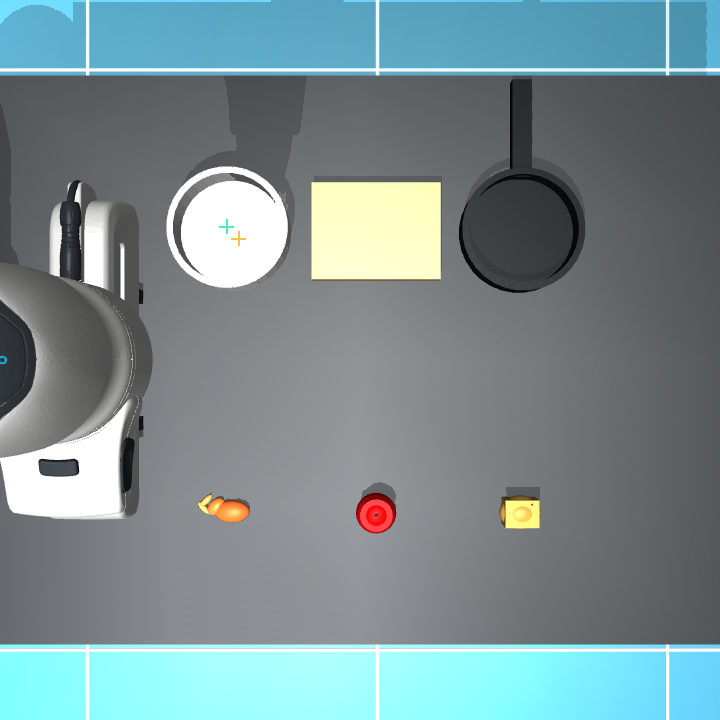

模型生成与视觉放置
接入同一个可验证闭环
保留 cover_kitchen_sort_v2 的物理布局、接触参数和成功门限。最终控制代码来自本地9B模型，不使用上轮会话手写候选。
1 · 生成能力：模型大小不是唯一问题
0.8B、3B及9B非思考提案都保留了失败记录。9B在思考模式中能推导正确的前提和增删效果，但长推理会耗尽token预算；改为“有界推理 → 单独最终JSON收束”，再用正式BT与有限BFS检查，得到可覆盖C1/C2/C3的7个接地动作。
代码阶段发现整场景任务描述会让模型在Pick里继续Place甚至回HOME。改为只提供当前动作的终止状态和允许API，不代写动作序列。实际生成源码保留原样，运行前检查API白名单、签名和运动目标的数据来源，运行后读取真实状态检查完整CP转移。土豆的Pick/Place使用已通过的同类9B程序原文，仅重新绑定对象并独立物理验证，属于明确记录的跨对象程序复用，不计作两次新模型生成。
| Schema | pre | add | del |
|---|---|---|---|
| pick | ['empty()', 'at_source(OBJECT)'] | ['holding(OBJECT)'] | ['empty()', 'at_source(OBJECT)', 'home_completed()'] |
| place | ['holding(OBJECT)'] | ['at_target(OBJECT)', 'empty()'] | ['holding(OBJECT)', 'home_completed()'] |
| home | ['empty()'] | ['home_completed()'] | [] |
范围：CP、可选动作签名、接口与任务语义由工程指定；模型输出schemas后机械替换OBJECT完成接地。提示调整与两阶段编排由人工设计，不能据此声称完全无人干预发现动作库。
2 · 视觉定位：修的是几何，不是成功门限
- 俯视观测减少碗沿与夹爪遮挡；保存新的相机内外参和scene.xml，物理几何不变。
- 语义身份使用与实际渲染一致的描述区分橙色小虾和黄色土豆代理，保留原始Qwen点；没有读目标真实xy来挑选或替换点。
- RGB细化从Qwen点附近提取颜色连通域，碗拟合椭圆、锅检测圆沿、板取区域中心；苹果填孔后取最大内切区域，避免果梗影响。多候选歧义与裁剪不全会拒绝。
- 对应特征高度检测的是碗沿/锅沿，不能按碗底高度反投影。利用固定场景设计的沿高得到xy，再用目标支撑面高度放置；不是把GT坐标加回去。
- 固定支撑缓存在持物遮挡前观测固定碗/板/锅；源物体抓取点在各次动作时重新由RGB定位。


颜色/形状、沿高和相机标定都是显式先验；跨物体、光照、动态容器与未知高度尚未验证。这里的修复没有降低旧双指接触、释放、碰撞和位置验收门限。
3 · 实际本地生成代码
当前focused采样与续跑链共14次策略校验，最终7个接地动作通过，其中2个为未改源码的跨对象复用。此前不同提示和模型的调试另存，不合并为等预算性能统计。
pick(object=shrimp,support=bowl)
def policy(api):
# Get the grasp point for the shrimp
grasp_point = api.grasp_point()
# Approach the shrimp at a safe height
api.approach(grasp_point)
# Descend to the grasp point
api.descend(grasp_point)
# Close the gripper to grasp the shrimp
api.close_gripper()
# Lift the shrimp to transport height
api.lift()SHA256: 3adc93a99d786d25338e4ab0a783d33cf28dbae61693c30173c78164ab32f6d4place(object=shrimp,support=bowl)
def policy(api):
api.carry(api.destination_point())
api.lower(api.destination_point())
api.open_gripper()
api.withdraw()SHA256: 7bd21b38784bb86e0c933dc0c29a50adafc03453e3f3011c698b85fba1cc2fd5pick(object=apple,support=board)
def policy(api):
grasp_center = api.grasp_point()
api.approach(grasp_center)
api.descend(grasp_center)
api.close_gripper()
api.lift()SHA256: 7ab1050f759e338e964f00731fbed8769bd7483aea99b613f9c8fb6d408b1bf6place(object=apple,support=board)
def policy(api):
api.carry(api.destination_point())
api.lower(api.destination_point())
api.open_gripper()
api.withdraw()SHA256: 7bd21b38784bb86e0c933dc0c29a50adafc03453e3f3011c698b85fba1cc2fd5pick(object=potato,support=pan)
def policy(api):
# Get the grasp point for the shrimp
grasp_point = api.grasp_point()
# Approach the shrimp at a safe height
api.approach(grasp_point)
# Descend to the grasp point
api.descend(grasp_point)
# Close the gripper to grasp the shrimp
api.close_gripper()
# Lift the shrimp to transport height
api.lift()SHA256: 3adc93a99d786d25338e4ab0a783d33cf28dbae61693c30173c78164ab32f6d4place(object=potato,support=pan)
def policy(api):
api.carry(api.destination_point())
api.lower(api.destination_point())
api.open_gripper()
api.withdraw()SHA256: 7bd21b38784bb86e0c933dc0c29a50adafc03453e3f3011c698b85fba1cc2fd5home()
def policy(api):
api.return_home()SHA256: ab0ee04ddd7a2da959babc4fd9bb5c71364129d4f33dad0d97e70fcd345c474f4 · C3：三件物体全部放置、释放和回HOME
全部动作由正式BT选择、已验收模型源码执行；不是重放旧关节轨迹。每步均检查pre/add/del与未声明增删；末态检查支撑、姿态、手部撤离与1秒稳定窗口。
| 任务/初态 | 步数 | 成功 | 最大落点误差 | 证据 |
|---|---|---|---|---|
| C1 / seed 0 | 3 | True | 3.697 mm | JSON · 视频 · BT |
| C2 / seed 0 | 5 | True | 3.498 mm | JSON · 视频 · BT |
| C3 / seed 0 | 7 | True | 3.446 mm | JSON · 视频 · BT |
| C3 / seed 1 | 7 | True | 3.276 mm | JSON · 视频 · BT |
| C3 / seed 2 | 7 | True | 3.694 mm | JSON · 视频 · BT |


留出seed1/2仅为固定场景下±2mm初态扰动，未用于修改生成源码；不代表大范围随机布局泛化。
5 · 验收与遗留边界
视觉测试25项，运动目标数据来源测试8项，既有方法测试44项，原工程回归164项；总计241项。每轮保存运行源码快照、输入模型和程序hash，并检查运行期间未变。旧失败、旧会话候选和新模型生成证据分别保存。
- 抓取仍使用配置偏移与初始化物体z先验；载物运动反馈和独立评价仍读取仿真状态。
- 严守无weld抓持；最终抓放成功不是把持物或目标谓词写为True。
- 未声称原论文表格的重复采样、消融和自动跨层修订结果已复现。这里完成的是一个固定场景的工程闭环。
- 9B权重约6GB存放在模型缓存，不并入实验包；不需要向外部付费API发送场景。